Auxiliar 17: Fuerza de Lorentz
El campo magnético ejerce fuerzas sobre cargas en movimiento y sobre corrientes. La fuerza de Lorentz unifica la fuerza eléctrica y magnética. La ley de Biot-Savart permite calcular el campo magnético generado por distribuciones de corriente arbitrarias.
Temas que cubre
- Fuerza magnética sobre carga puntual: $\vec{F} = q\vec{v}\times\vec{B}$
- Fuerza de Lorentz completa: $\vec{F} = q(\vec{E} + \vec{v}\times\vec{B})$
- Fuerza sobre cable conductor en campo magnético: $\vec{F} = \int I\,d\vec{\ell}\times\vec{B}$
- Generalización a distribuciones superficiales ($\vec{K}$) y volumétricas ($\vec{J}$)
- Ley de Biot-Savart: campo magnético de hilo, superficie y volumen de corriente
- Campo magnético de cable infinito: $B = \mu_0 I / (2\pi r)$
- Fuerza entre cables paralelos con corriente
Conceptos clave
Fuerza magnética
Solo actúa sobre cargas en movimiento. Es siempre perpendicular a $\vec{v}$ y a $\vec{B}$, por lo que no realiza trabajo. Determina la dirección de la trayectoria (movimiento circular) sin cambiar la rapidez.
Fuerza sobre corriente
Una corriente $I$ en un tramo $d\vec{\ell}$ inmerso en campo $\vec{B}$ siente $d\vec{F} = I\,d\vec{\ell}\times\vec{B}$. Para distribuciones: reemplazar $I\,d\vec{\ell}$ por $\vec{K}\,dS$ o $\vec{J}\,dV$.
Biot-Savart
Análogo magnético de la ley de Coulomb: cada elemento de corriente $I\,d\vec{\ell}'$ contribuye a $\vec{B}$ con un campo proporcional a $\mu_0/4\pi$ e inversamente proporcional al cuadrado de la distancia.
Cable infinito
Por Biot-Savart (o Ampère), un cable infinito con corriente $I$ genera $B = \mu_0 I/(2\pi r)$ en dirección azimutal. Cables paralelos con corrientes iguales se atraen; con corrientes opuestas se repelen.
Fórmulas fundamentales

Qué hay que entender
- Identificar el tipo de fuente de corriente (hilo, plano, volumen) y calcular $\vec{B}$ por Biot-Savart o Ampère (si hay simetría).
- Para la fuerza sobre un cable finito en el campo de otro, integrar $I\,d\vec{\ell}\times\vec{B}$ a lo largo del cable finito.
- En el anillo giratorio: la corriente equivalente es $I = \lambda v = \lambda R\omega$; la fuerza magnética sobre cada elemento $d\ell$ del anillo da una componente radial que genera tensión.
- La regla de la mano derecha determina la dirección de $\vec{B}$ y del producto cruz $\vec{v}\times\vec{B}$.
- Cables paralelos: misma dirección de corriente → atracción; corrientes opuestas → repulsión. La fuerza por unidad de largo es $F/\ell = \mu_0 I_0 I_1 / (2\pi x)$.